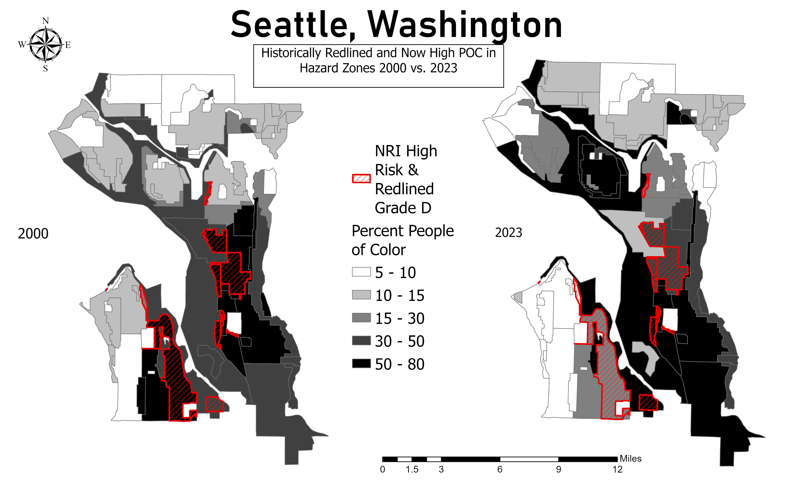

About Me
I am a graduate geography researcher and GIS specialist focused on climate displacement, hazard vulnerability, environmental justice, and spatial analysis. My work combines GIS, LiDAR terrain analysis, hazard mapping, demographic analysis, and geospatial visualization to better understand how environmental risk impacts communities.
My research interests include climate adaptation, disaster risk, hazard mitigation, public health geography, environmental justice, and climate-driven displacement.
Outside of GIS
I enjoy hiking, field exploration, and taking my cat Apollo on walks.


Hazard Gentrification & Environmental Justice

Spatial analysis of historical redlining, demographic change, hazard exposure, and environmental justice patterns across Seattle.
LiDAR-Based Landslide Susceptibility Assessment

LiDAR terrain analysis, DEM classification, slope modeling, and hillshade visualization for landslide susceptibility assessment.
Resume
GIS • Spatial Analysis • Hazard Geography • Research